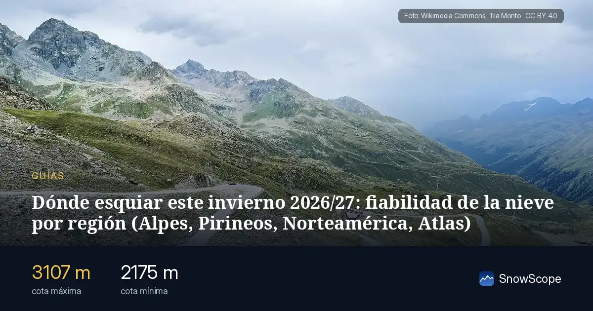
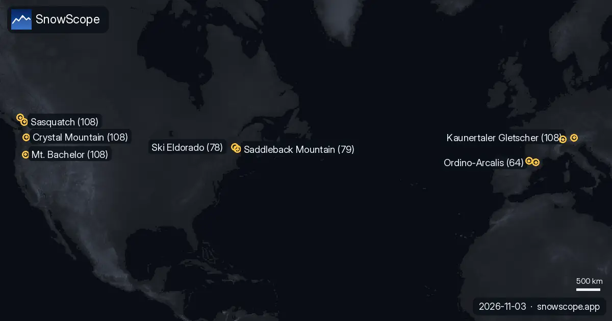

Dónde esquiar este invierno 2026/27: fiabilidad de la nieve por región (Alpes, Pirineos, Norteamérica, Atlas)
Algunas estaciones conservan nieve casi todos los inviernos; otras dependen de la suerte. Estudiamos la profundidad de nieve a media montaña a lo largo de 46 inviernos anteriores (1980-81 a 2025-26) y contamos cuántos días entre el 15 de diciembre y el 31 de marzo tuvieron al menos 30 cm en 9 de cada 10 inviernos. Eso te dice dónde reservar con seguridad.
Consulta la previsión de nieve en tiempo real de Kaunertaler Gletscher en la app SnowScopeEspesor de nieve, alertas de nieve polvo y mapa 3D, gratis.
Qué cuenta como seguro de nieve
La temporada principal de esquí dura 108 días. Una estación obtiene el estatus 'seguro de nieve' si tiene al menos 30 cm a media montaña durante esos días en 9 de cada 10 inviernos anteriores. También rastreamos 'días típicos': al menos 30 cm en la mitad de los inviernos. Estos números provienen de nuestro historial de nieve—un registro de profundidad de nieve anterior corregido por altitud—no de reportes de estaciones ni adivinanzas.
La altitud importa. Las estaciones más altas tienden a tener más días seguros de nieve. También los glaciares y las laderas orientadas al norte, que conservan nieve más tiempo cuando llega la primavera.

Alpes: la región más fiable
De 1178 estaciones alpinas que estudiamos, 211 tienen al menos 90 días seguros de nieve. Esta es la historia más sólida en Europa. Las más fiables—Kaunertaler Gletscher y Jungfraujoch Snow Fun Park—alcanzan 108 días, es decir, al menos 30 cm a media montaña casi todos los inviernos.
Febrero es el mes de mayor nieve en los Alpes, con una profundidad típica de media montaña de 48 cm. La estación alpina mediana tiene 92 días típicos (es decir, en la mitad de los inviernos anteriores hubo 30 cm o más durante esos días). La Grave y Mölltaler Gletscher también cumplen ambas condiciones: 108 días seguros y 108 días típicos.

Pirineos: nieve más delgada, menos garantías
Ninguna de las 53 estaciones pirenaicas que examinamos alcanza 90 días seguros de nieve. La más fiable, Ordino-Arcalis, tiene 64 días seguros de nieve—bueno, pero no garantizado. Cauterets Cirque du Lys alcanza 39 días seguros; Formigal y Gourette están por debajo de 30.
Febrero sigue siendo el mes más fuerte (49 cm típicos a media montaña), pero la estación mediana tiene solo 67 días típicos. Si eliges una estación pirenaica, opta por una que esté alta, orientada al norte o con glaciar. Reserva tarde en la temporada y consulta el mapa de nieve en directo cerca de tu viaje.

Oeste de EE.UU.: fiabilidad elevada, marzo alcanza el pico
De 195 estaciones del oeste de EE.UU., 77 tienen 90 o más días seguros de nieve. La estación mediana mantiene 72 días seguros de nieve, lo que es sólido. Las cuatro primeras—Mt. Bachelor, Crystal Mountain, Stevens Pass y Mt Baker—todas alcanzan 108, más 108 días típicos cada una.
Marzo es el mes más profundo en el oeste de EE.UU., con 124 cm típicos a media montaña. La estación mediana tiene 108 días típicos, es decir, puedes contar con nieve decente en la mitad de todos los inviernos. El oeste de EE.UU. lidera el mundo en fiabilidad de nieve.
Oeste de Canadá: temporada corta, totales elevados
De 57 estaciones canadienses, 38 tienen 90 o más días seguros de nieve. La mediana aquí es excepcionalmente alta: 108 días seguros de nieve y 108 días típicos. Sasquatch, Whistler Blackcomb, Mount Cain Alpine Park y Ski Callaghan ofrecen los 108 días completos de certeza de nieve.
Marzo es el mes del pico con 92 cm típicos a media montaña. Estas estaciones a menudo cierran a principios de abril, así que la temporada es más corta que en los Alpes, pero la nieve es profunda y fiable mientras dura.
Noreste de EE.UU. y Marruecos: la nieve es rara
Ninguna de las 111 estaciones del noreste de EE.UU. alcanza 90 días seguros de nieve. La mejor—Saddleback Mountain—tiene 79 días seguros de nieve. La mediana tiene 0, y los días típicos medianos son solo 63. Febrero alcanza el pico a 41 cm. Los viajes de principios de temporada (antes de Navidad) son arriesgados; los descansos de esquí de finales de febrero ofrecen las mejores probabilidades.
En las montañas del Atlas en Marruecos, examinamos 3 estaciones. Oukaimden, la más alta a 3204 m, tiene 81 días típicos pero 0 días seguros de nieve. La nieve allí es delgada e infiable. Si planeas un viaje de esquí marroquí, ve en enero o febrero y observa el mapa de cerca.
Consejos para esquiadores
- Reserva viajes de principios de temporada (antes de Navidad) solo en estaciones altas, glaciadas, orientadas al norte con 90+ días seguros de nieve. Las estaciones más bajas necesitan que llegue nieve primero.
- Febrero es el mes más seguro para la mayoría de regiones; marzo mantiene la nieve más profunda a gran altitud en América del Norte.
- En los Pirineos, noreste de EE.UU. y Atlas, consulta el mapa de nieve en directo y reserva tarde—la nieve puede llegar tarde o derretirse rápido, así que las decisiones cercanas al viaje funcionan mejor que las reservas anticipadas.
- Las estaciones más bajas y baratas ofrecen gran valor en inviernos generosos: usa el mapa para identificarlas cuando cae nieve.
- Antes de cualquier día fuera de pista, consulta el boletín oficial de avalanchas de tu región, incluso en estaciones con historiales de nieve prolongados.
Sobre estas cifras
Los espesores de nieve de las estaciones son la nieve más profunda en las pistas altas en la fecha indicada; son estimaciones para una zona, no una medida en un punto. Las previsiones pueden cambiar. Consulta siempre el boletín oficial de aludes antes de salir fuera de pista.
Boletines oficiales de aludes: EAWS (Europe) · avalanche.org (US) · Avalanche Canada
Citar este informe
Para investigación, docencia o prensa: cifras y gráficos reutilizables libremente bajo CC BY 4.0 con esta cita.
SnowScope (2026), Dónde esquiar este invierno 2026/27: fiabilidad de la nieve por región (Alpes, Pirineos, Norteamérica, Atlas), https://snowscope.app/blog/es/2026/11/where-to-ski-winter-2026-27-snow-reliability-by-region.html, consultado el 2026-11-03
SnowScope (Atlas Labs). (2026, November 3). Dónde esquiar este invierno 2026/27: fiabilidad de la nieve por región (Alpes, Pirineos, Norteamérica, Atlas). SnowScope snow reports. https://snowscope.app/blog/es/2026/11/where-to-ski-winter-2026-27-snow-reliability-by-region.html
BibTeX
@misc{snowscope2026wheretoskiwinter202627sn,
author = {{SnowScope (Atlas Labs)}},
title = {Dónde esquiar este invierno 2026/27: fiabilidad de la nieve por región (Alpes, Pirineos, Norteamérica, Atlas)},
year = {2026},
month = nov,
howpublished = {\url{https://snowscope.app/blog/es/2026/11/where-to-ski-winter-2026-27-snow-reliability-by-region.html}},
note = {Published 2026-11-03 16:34 UTC; accessed 2026-11-03}
}· CC BY 4.0 · Métodos, datos y herramientas →
Sigue Kaunertaler Gletscher
Gratis: un aviso cuando llega la nieve y la previsión cada mañana.